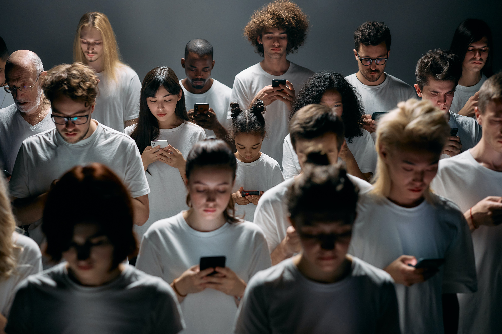

The Evolution of Communication:
How Technology has changed the way we connect.

On 24th January 2024,
"Remember the time when 'tweet' was just a sound birds made?
Now, it's how we catch up with global news over breakfast! Let's dive into riveting saga of
technology's grip on our daily life." Technology has brought about a paradigm shift in the way we establish
and maintain connections. It has revolutionized the way we communicate, learn and work. Not only does
technology has made easier to communicate, but also helped in the everyday routine of each individual's life.
Additionally, technology has transformed education by providing access to wealth of information at our
fingertips. Furthermore, it has streamlined numerous tasks in the workplace, making them more efficient and
productive.
As we know, Technology is the application of scientifiv knowledge to the practical aims of human life or, as
it it something phrased, to the change and manipulation of the human environment. We can all say that
technology is the most amazing thing that has ever happened to humankind. In this modern world, technology is
no more a luxury; it has become a necessity. Moreover, some would say it has become an addiction.
Every tiniest present in this world has two sides that are negative and positive. If technology has made our
life easier, it has equally made us fully-dependent to it. Our problem is that we love
technology to an extreme that it brings harm to us without our knowledge. I agree, that technology has made
memories by making people connect which our older generator thought was impossible. Technology has had a
largely positive impact on society and the world at large. It's easy to forget when trying to wrangle kid's
phone out of their hands, but technical advancements
have benefited daily life in innumerable ways. To state an example we can take of pandemic lockdown,
considering how virtual meeting kept us connected and streaming programs entertained us. And most importantly
we were able to know about our beloved ones's wellbeing through technology.
Modern innovatives don't just enhance lives but in some cases save them.
- We believe these are the most
overlooked reasons that people should appreciate the upside of technology.
A laptop can be an invaluable tool for training. literacy and education in places where those things aren't widely available. In the past, opportunities for economic and social development in many impoverished places around the world have lagged. But internet access alone gives users the opportunity to connect to potential employers and find work online.
No one wants surgery. But if you ever need it, aren't you glad that recent medical innovations are leading to less invasive and more accurate procedures? These types of advancements have transformed the medical industry. In computer-assisted brain surgery, surgeons use technology to create a 3D image of the brain to help guide their operations. Thanks to similar innovations. more than 250 million endoscopies are performed each year around the world. This minimally invasive procedure is widely used on joints and other areas of the body to reduce hospitalizations and hasten recovery times.
Some folks may be on the fence, but organizational leaders know they need to keep up with the latest technological innovations to remain competitive, respond to compliance demands, and protect their most sensitive data from ongoing threats.We have also taken the help of technology in making our website look beautiful and appealing to survive in this industry. Without the help of technology, we would not have been able to compete this easily.
We have discussed about the positive side of
technology but as I said previously, Every thing has a negative side to it and yes, Technology also brings
negativity to the society.
While there are some great benefits to living in a tech-filled world, we also should consider some of the
negative ways technology has changed our lives.The question frequently asked is "How has technology impacted
the worls we live in?" The turth is it has changed it a lot. From google maps to social media, we can access
to everything by just plugging the phone, 24 hours a day, 7 days a week.
- Many of us suffer from a multitude of negatuve
results of overexposure to tech. few of them are mentioned below with details.
Technology has definitely impacted how we sleep. Many of us stay up far too late into the night texting friends or scrolling through social media. Unfortunately, I and you guys are one of them. We are fully aware that it is not a good habit however, we cannot force ourselves to stop as we have become so addicted to our smart phone. Not just teenagers but both kids and adults alike spend countless hours watching funny cat videos and other mindless amusements. All of this keads to interrupted rest and overall poor sleeping habits leading to poor health conditions especially eyes.
Technology helped us connect and communicate with iur relatives and friends but at the same time it has made a significant lack of human contact causing depression. When the majority of our interactions with others take place online we may even feel disconnected from humanity. In the end, electronic communication is a long way from true human companionship and it may even hurt personal relationships from miscommunication, physical and emotional attachments and many more.
Let's face it: People tend to be much brave behind an online persona. People are much likely to say things easily which they would not in person. This leads to severe bullying and manipulations. The anonimity provided by the internet causes a rampant cyberbullying as it is easier to say errible things to someone when you may not be held accountable for your actions.
This impact of technology is one of the big one for those who are worried about their children. Explicit
videos and violence are easily accessible all over the web. For example we take a movie which was a
blockbuster all over world "Animal", which was a symbol of father-son bond but also involved lots of violence,
abusive words, cheating and many more. However people loved it whereas on the other side, 12th fail movie
which was hugely inspiring and showed the struggle of the real poverty, was not even got the attention of
people in the cinemas.
While people may try their best to use parental controls, children are still bound to see more than they need
to see at one point or another.
Technology has become a vital part of our daily lives since we rely on it for all of our activities. The use
of contemporary technology has made the entire civilization dependent. Without technology, life and commerce
would grind to a halt, Technology has a positive impact on society, but it must be managed with caution. It is
both beneficial and detrimental.
We must know that Technology is very importance for today's society however a certain limitation should be
there for it to be in controls and to bring more positivity rather than harm to society.